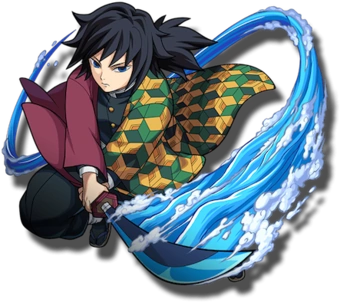

-
Tanjiro
respiração do sol
Descrição
Tanjiro é gentil por natureza e foi descrito por outros como tendo olhos muito gentis. Ele exibe uma grande dose de determinação e não desistirá uma vez que tenha uma meta a alcançar; o melhor exemplo disso é sua busca incansável para encontrar uma cura para Nezuko.
-
Inosuke
Respiraçao da besta

Descrição
Inosuke é um jovem extremamente temperamental e orgulhoso que sempre gosta de pensar que é o lutador mais forte em uma situação, desafiando constantemente a maioria das pessoas que encontra e querendo que os outros o respeitem e elogiem por sua habilidade.
-
Zenitsu
Respiração do trovão

Descrição
Zenitsu está em um constante estado de medo, sempre chora e tenta fugir ao ver o perigo, alegando que quer viver uma vida modesta e normal, ao invés da vida que os Caçadores de Demônios normalmente levam muita rola.
-
Tomioka
respiração da aguá
Descrição
Tomioka é um jovem alto, sério e fechado que possui um senso de justiça muito grande, além de piedade (já que foi graças a sua piedade que Nezuko permaneceu viva no começo dessa história) e uma certa dificuldade em lidar com outras pessoas em diversos momentos.
-
Shinobu
respiração do inseto

Descrição
Shinobu Kocho (Kocho Shinobu) é uma personagem coadjuvante de Demon Slayer: Kimetsu no Yaiba, sendo uma exterminadora de demônios e a atual Pilar do Inseto. Shinobu ingressou no esquadrão após a morte de sua Irmã Kanae pelas mãos do Lua Superior Doma, seu objetivo era proteger as pessoas de compartilharem a mesma dor que ela sentiu.